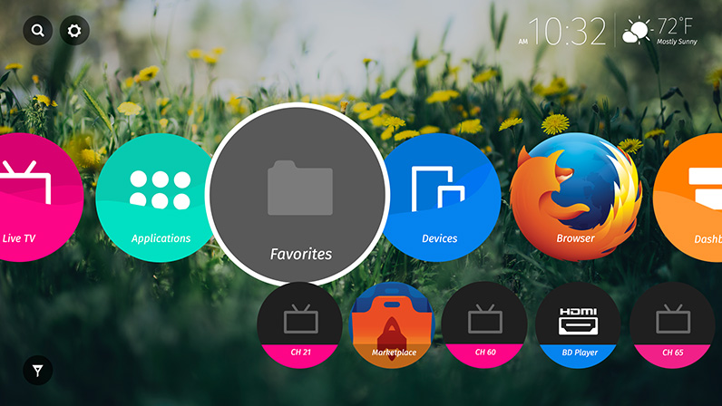
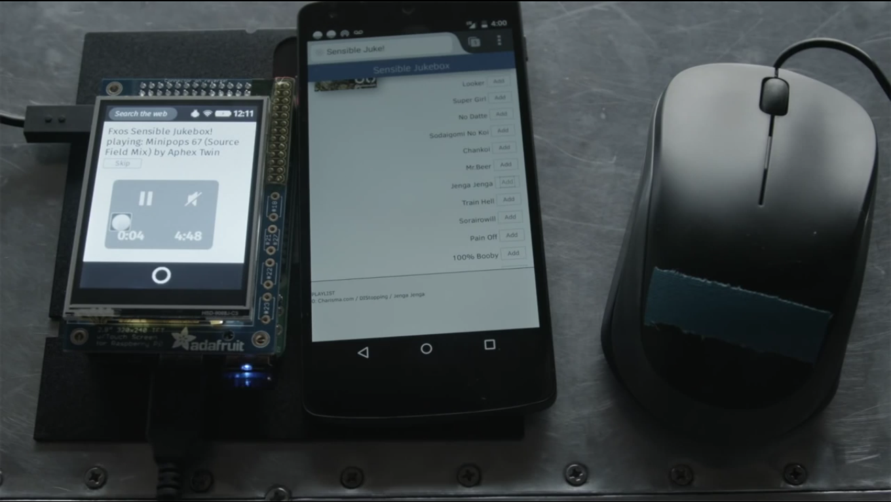
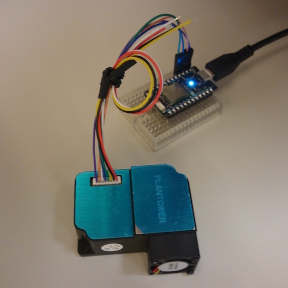
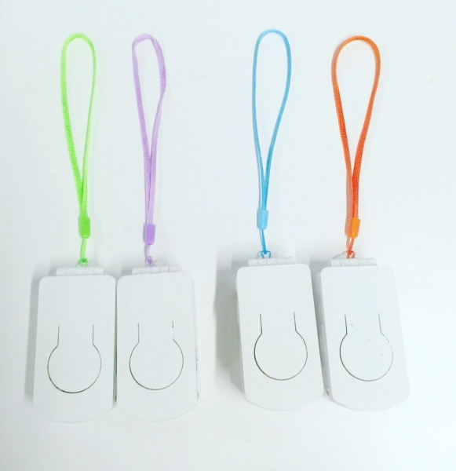

Mozilla Connected Devices

Once upon a time, there was Firefox OS
Firefox OS
- AKA Boot to Gecko (B2G)
- Kernel Linux (Android)
- Apps entirely developed using
HTML, Javascript and Web API
Firefox OS
- Problem: Good mobile devices are too expensive
- Problem: Cheap mobile devices are too bad
- Problem: Marjority of people in a lot of countries still use Featured Phones
- Firefox OS came with the idea of offering smartphones cheapest and with good quality
- And also democratize the mobile development
Firefox OS structure
Gaia
Collection of web apps that provide the UI
Gecko
JS Engine and HTML Render, friendly APIs to access the hardware
Gonk
Kernel Linux, Device drivers and hardware abstraction
Types of Firefox OS Apps
- Hosted Apps - stored in your server, easier to update, harder to be approved in the marketplace, limited access to the hardware.
- Priviledged Apps - stored in the Marketplace (and reviewed by them), uses a Content Security Policy.
- Certified Apps - part of the Operating System, just for Mozilla and partners.
Web APIs (Hosted Apps)
- Vibration API
- Screen Orientation
- Geolocation API
- Mouse Lock API
- Network Information API
- Battery Status API
- Alarm API
- Push Notifications API
- WebFM API / FMRadio
- WebPayment
- IndexedDB
- Ambient light sensor
- Proximity sensor
- Notification
Web APIs (Priviledged Apps)
- Device Storage API
- Browser API
- TCP Socket API
- Contacts API
- systemXHR
Web APIs (Certified Apps)
- WebTelephony
- WebSMS
- Idle API
- Settings API
- Power Management API
- Mobile Connection API
- WiFi Information API
- WebBluetooth
- Permissions API
- Network Stats API
- Camera API
- Time/Clock API
- Attention screen
- Voicemail
Firefox OS Metamorphosis
- From Smartphone devices to Any Device
- Firefox OS TV 
- Firefox OS Rapberry PI 
- Connected Devices
Connected Devices
- Internet of Things (IoT) leads the way to the next phase of the Internet
- Mozilla wants to ensure:
- Security for users
- Interoperability
- Openness
- Influence IoT protocols
- Solve real end user problems
Current Connected Devices Projects
Sensor Web
Project Haiku
Project Magnet
Closed Projects
- Project Tablet: Exploring a simple, single-purpose tablet, completely dedicated to browsing the web.
- Project Link: Personal user agent for the smart home, creating a web of things that is completely yours.
- Smart Kitchen: Helps answer the question, "What's for dinner?" by identify your existing inventory, and then suggesting recipe options based on available refrigerator ingredients.
Closed Projects
- Project Cue: Makes use of an always-on voice-enabled smart screen device to set reminders and manage and keep track of activities, events, and to-do lists of family members.
- Project Vaani: Project Vaani aims to bring a voice interface to the world of connected devices, using open and customizable technologies. We have stopped the Vaani-powered prototype called Vaani-Local and moved the technology building work under "Platform & Tools"
- Smart Displays: Project is set out to explore the role of displays at home and understand what role displays might play in the future connected home and opportunities for innovation.
Product Innovation Process
Stay tuned
- Meetings Every Thursday at 10:30am Pacific Time (18:30 BST)
- http://air.mozilla.org/ to watch and listen
- Join irc.mozilla.org #connecteddevices for backchannel discussion
- https://wiki.mozilla.org/Connected_Devices
- Firefox OS/Connected Devices Announcement
- Connected Devices category on Discourse
- IRC #cd-participation channel
- IRC #foxfooding channel
- Connected Devices Group on Telegram
- Foxfooding on Twitter
- Email: cd-info[at]mozilla[dot]com | foxfood-central[at]mozilla[dot]com